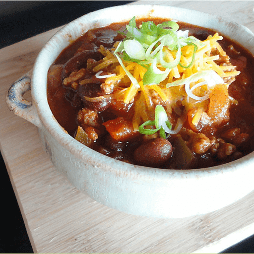

Chili
Chili

Description
The family household staple when it get's cold out. Easy and delicious
Ingredients
- 1lb ground turkey
- 1 can pinto beans
- 1 can chili beans
- 2 cans diced tomatoes
- 48oz tomato juice
- 1 packet chili seasoning
Steps
- Cook ground turkey in pan
- Drain excess fat
- Place ground turkey in slow cooker
- Drain diced tomatos and beans juices and place in slow cooker
- Pour in tomato juice
- Stir in chili seasoning packet
- Cook on low 6-8 hours, or high 3-4
Return to main page